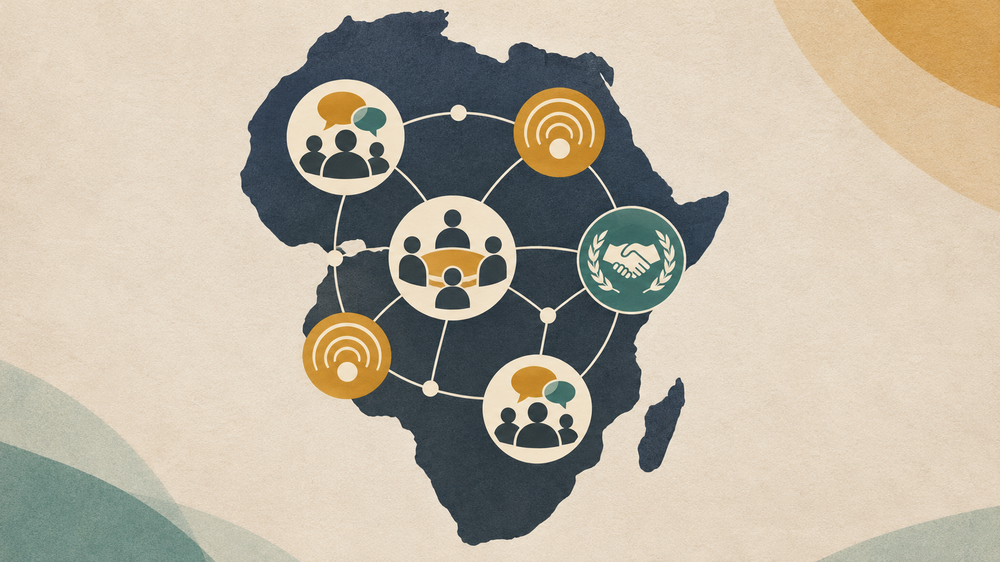

Africa · opinion / analysis · 18 November 2026
Analysis: Africa’s conflict-prevention gap is action after warning.
Prof. Adeoye O. Akinola argues that early-warning systems matter only when institutions have the political commitment, financing and coordination to act on them.

What the author argues
In an opinion essay published by SABC News, Akinola argues that early-warning systems cannot prevent conflict on their own. Institutions must translate information into decisions, support local peacebuilding knowledge and sustain prevention financially.
Why It Matters
The analysis shifts attention from crisis response to governance, community knowledge, African agency, institutional coherence and peace financing.
What We’re Watching
- Any published recommendations from the African Union Studies symposium referenced by the essay.
- New funding or institutional commitments.
- Evidence that early-warning information is being converted into preventive action.